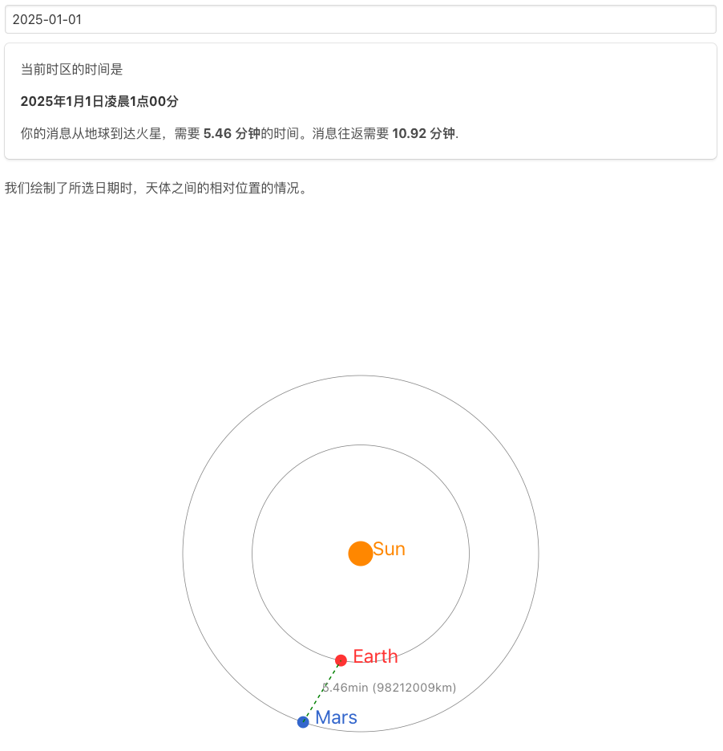
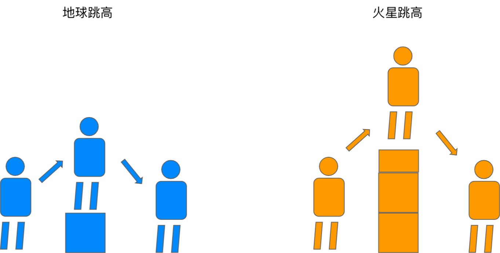
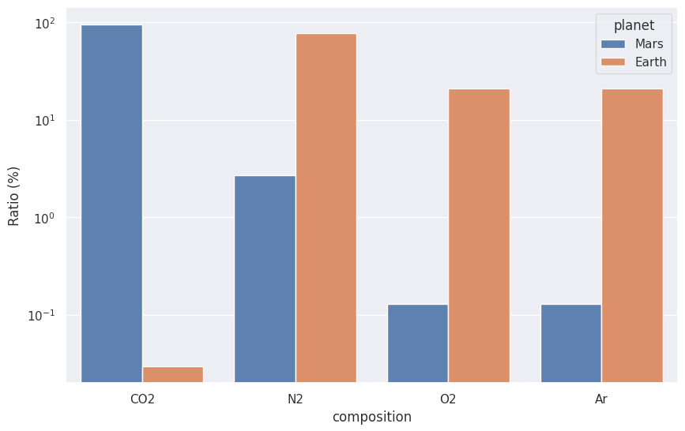

火星与地球¤
火星在哪里¤
星际移民中心开发的在线工具：https://interimm.org/comms-latency/
可以查看，在任意时刻，地球和火星的相对位置。 
基本知识¤
| 地球 | 火星 | |
|---|---|---|
| 半径 | 6371km | 3390km (0.53 Earth radius) |
| 引力 | 1g (9.8m/s^2) | 0.38g (3.7m/s^2) |
| 太阳日 （solar day） | 24h | 24h 39m 35s |
| 公转 | 1y (365.25d) | 1.8809y (1y 320d 18h) |
| 地球 | 火星 | |
|---|---|---|
| 温度 | −89 °C - 55 °C | −110 °C - 35 °C |
| 声速 | ~ 330m/s | ~ 240 m/s - 250 m/s |
| 大气压强 | 101kPa (1 atm) | 0.6kPa (0.0063 atm) |
| 大气密度 | 1.2 kg/m^3 | 1.7% of that on the Earth, or 35 km above sea level on the Earth (0.020 kg/m^3) |
火星大气成分3:
| 成分 | 地球 | 火星 |
|---|---|---|
| 二氧化碳 (CO2) | 0.03% | 95% |
| 氮气 (N2) | 78% | 2.7% |
| 氧气 (O2) | 21% | 0.13% |
| 氩气 (Ar) | 0.9% | 1.6% |
| 甲烷 (CH4) | 0.002% | 0 |

来源：The red planet's small size complicates its habitability. Credit: NASA

来源：自制

来源：自制，代码在此。
希腊平原的底部温度比同纬度地区高 10 度左右，气压也能达到 1 kPa以上。
火星日照¤
火星的日照水平是地球的 43%，是可观的能源，可以支撑农业，也可以支撑一些化工生产7489。
#/media/File:Jezero_crater_%E2%80%94_the_landing_site_for_NASA%E2%80%99s_Mars_2020_mission.png){kind=link}
-
Contributors to Wikimedia projects. Earth. In: Wikipedia [Internet]. 15 Jan 2023 [cited 15 Jan 2023]. Available: https://en.wikipedia.org/wiki/Earth ↩↩
-
Contributors to Wikimedia projects. Mars. In: Wikipedia [Internet]. 12 Jan 2023 [cited 15 Jan 2023]. Available: https://en.wikipedia.org/wiki/Mars ↩↩
-
Comparing Planetary Gases. In: UCAR [Internet]. [cited 15 Jan 2023]. Available: https://scied.ucar.edu/activity/learn/planetary-gases https://ntrs.nasa.gov/api/citations/19890018252/downloads/19890018252.pdf ↩
-
Abel AJ, Berliner AJ, Mirkovic M, Collins WD, Arkin AP, Clark DS. Photovoltaics-Driven Power Production Can Support Human Exploration on Mars. Frontiers in Astronomy and Space Sciences. 2022;9. doi:10.3389/fspas.2022.868519 ↩
-
Solar panel. In: Marspedia [Internet]. [cited 15 Jan 2023]. Available: https://marspedia.org/Solar_panel ↩
-
Gallagher W. Apple’s iPhone 14 battery capacities revealed in filing. AppleInsider. 12 Sep 2022. Available: https://appleinsider.com/articles/22/09/12/apples-iphone-14-battery-capacities-revealed-in-filing#:~:text=iPhone%2013%3A%2012.41%20watt%20hours,Pro%20Max%3A%2016.75%20watt%20hours. Accessed 15 Jan 2023. ↩
-
Joseph Appelbaum and Dennis J Flood. Solar radiation on mars. Solar Energy, 45(6):353–363, 1990. URL: https://ntrs.nasa.gov/api/citations/19890018252/downloads/19890018252.pdf, doi:10.1016/0038-092x(90)90156-7. ↩↩
-
N Tack, G W W Wamelink, A G Denkova, M Schouwenburg, H Hilhorst, H T Wolterbeek, and P W Goedhart. Influence of martian radiation-like conditions on the growth of secale cereale and lepidium sativum. Frontiers in Astronomy and Space Sciences, 2021. URL: https://www.frontiersin.org/articles/10.3389/fspas.2021.665649, doi:10.3389/fspas.2021.665649. ↩
-
Geoffrey Landis, Thomas Kerslake, David Scheiman, and Phillip Jenkins. Mars solar power. In 2nd International Energy Conversion Engineering Conference, International Energy Conversion Engineering Conference (IECEC). American Institute of Aeronautics and Astronautics, 16 August 2004. URL: https://doi.org/10.2514/6.2004-5555, doi:10.2514/6.2004-5555. ↩
-
Anthony J Abel, Aaron J Berliner, Mia Mirkovic, William D Collins, Adam P Arkin, and Douglas S Clark. Photovoltaics-Driven power production can support human exploration on mars. Frontiers in Astronomy and Space Sciences, 2022. URL: https://www.frontiersin.org/articles/10.3389/fspas.2022.868519, doi:10.3389/fspas.2022.868519. ↩
-
Briardo Llorente, Thomas C Williams, and Hugh D Goold. The multiplanetary future of plant synthetic biology. Genes, 10 July 2018. URL: http://dx.doi.org/10.3390/genes9070348, doi:10.3390/genes9070348. ↩